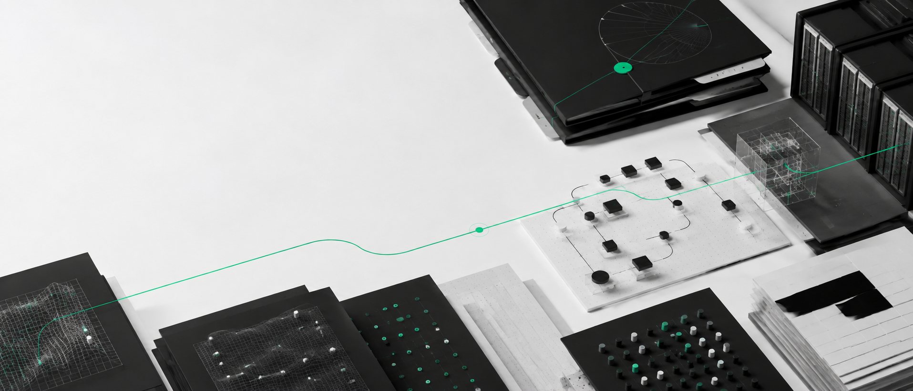
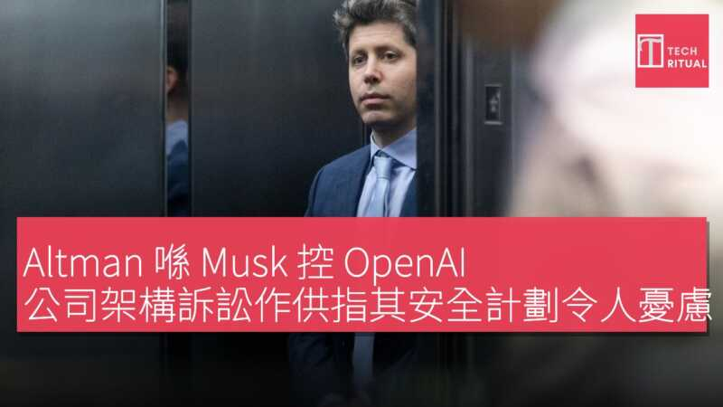
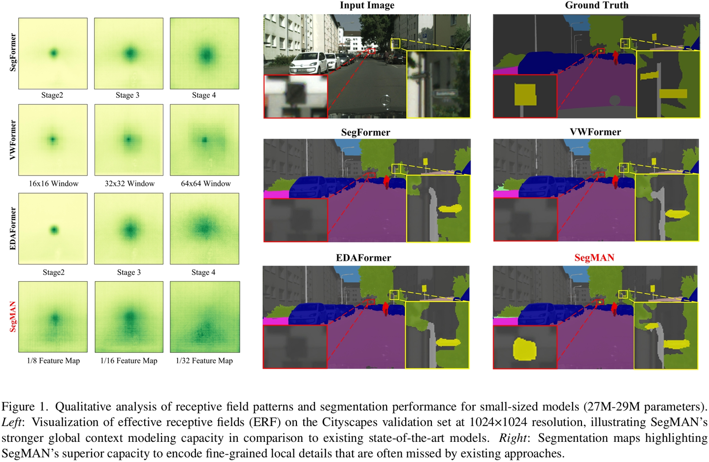
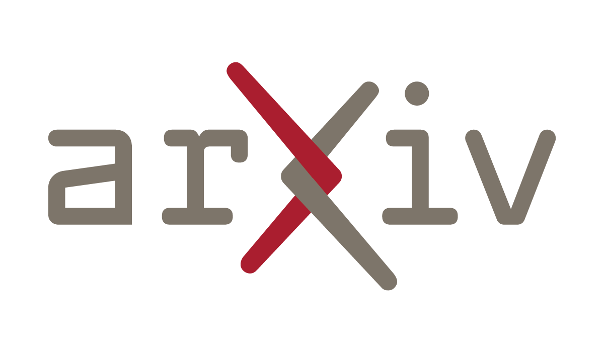
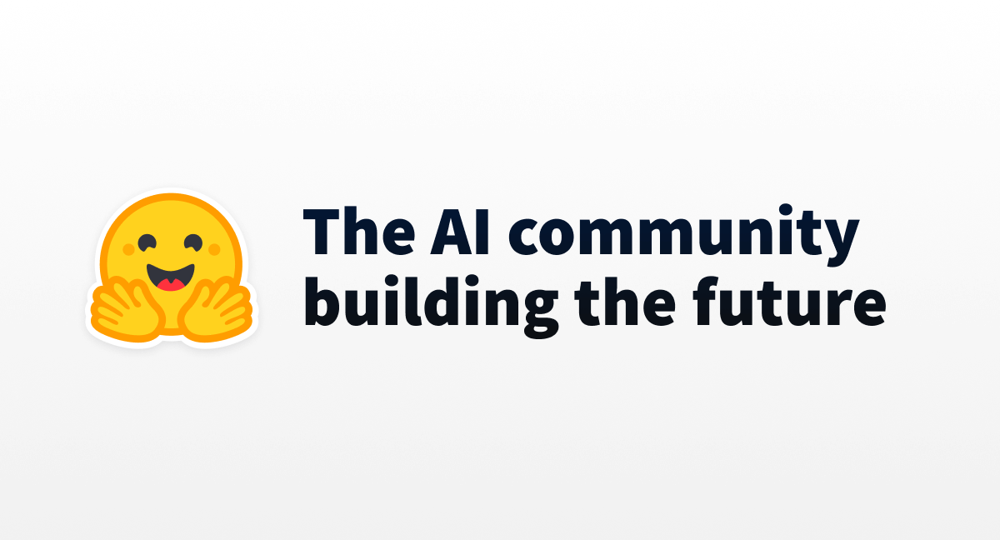
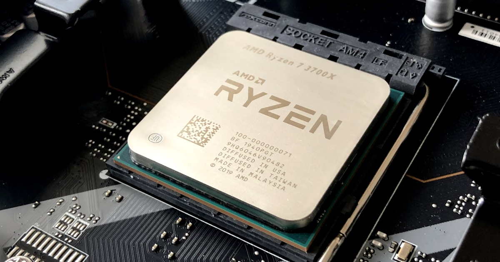

2026-09-08
VOL 343

读者，早。
产品端更像另一种筛选。Anthropic 用 20 人 Labs 快速试错，Altman 用“idea guy”故事给非技术创业者打气，a16z 合伙人则反驳永久底层叙事。听上去都乐观，落点却很冷：普通团队能不能用可控成本把 agent 放进真实流程。论文和工具条目给了今天的底色：agent 训练环境、推理构造基准、语音幻觉抑制、量化账单，正在把宏大叙事切回可测、可跑、可复查的小格子。
The Guardian 9 月 7 日报道，英国 Advanced Research and Invention Agency chair Matt Clifford 在接受 Anthropic 全职职位后被迫辞任。Clifford 将负责 Anthropic 在美国以外、包括英国在内的政府关系；他原本计划在 Aria 回避 Anthropic 相关事项，但多名议员认为这仍构成 clear conflict of interest。Clifford 表示会在 11 月 6 日前离任，并在过渡期设置 safeguards。

Financial Times 9 月 7 日报道，Nvidia partner Iren 的 CEO Daniel Roberts 认为 AI computing demand 可能长期无法被满足。Iren 从 crypto mining 转向 neocloud，计划到 2027 年中最多投入 300 亿美元；报道还提到 Goldman Sachs 预计美国 data center capacity 从 2024 到 2030 年会增长到三倍以上，Iren 已通过多种融资方式筹集 190 亿美元，市值约 170 亿美元，并有 34 亿美元 AI workload rental agreement。

Axios 9 月 7 日发布 Sam Altman 采访。Altman 在 G20 Innovation Ministerial 期间称，AI 正在让过去被嘲笑的“idea guy”重新变得有价值，因为非技术人也可以把想法做成产品。他还举例称有人用 GPT-5.6 做出月收入 2.5 万美元的产品。Axios 同时提醒，美国公众对 AI 风险仍有强烈担忧，而 OpenAI 与 Axios 存在 licensing and technology agreement。

Business Insider 9 月 7 日报道，Anthropic cofounder Ben Mann 领导的 Labs team 只有约 20 名轮换成员，却参与孵化了 Claude Code、Model Context Protocol 和 Claude Design。Mann 称该团队按 startup incubator 方式运行，预期大多数 bets 会失败，成功率约 20% 到 30%；项目通常每两周接受一次 persevere or pivot review，变成大项目后再毕业进入独立团队。
Business Insider 9 月 7 日报道，a16z general partner Anish Acharya 在 Lenny's Podcast 中称 AI 造成 permanent underclass 的说法是 dark fantasy。他认为 AI 机会比上一轮平台浪潮更分散，Claude Code、Codex、Lovable、Replit、Wabi 等工具和公司都在不同层面获得机会。不过报道也提到，旧金山因 AI 高薪人群涌入面临住房成本上涨等局部压力。

arXiv 9 月 7 日新提交论文列出 PerfReasoning benchmark。摘要显示，最强 closed-source models 在 reasoning-based Q&A 上超过 90%，最好 open-weight model 达到 82.4%；但在更难的 model construction 任务里，只有 GPT-5.6 Sol 超过 80% pass rate，其他配置平均低于 15%，且不同运行之间波动明显。论文称 task-specific RL 能让 4B 模型的 mapping-reasoning accuracy 提升 15.7 点。

arXiv 9 月 7 日列出论文《When Quantization Breaks Memory: Recurrent-State Write-Back in Low-Precision Temporal Inference》。论文聚焦 low-precision temporal inference 中 recurrent-state memory 的写回问题，讨论量化如何在长时间状态更新中累积误差。它没有发布新大模型，而是在提醒低精度推理省钱时，memory 和 temporal state 可能成为隐藏故障点。

arXiv 9 月 7 日新论文《Extremely Sparse Supervision Incentivizes Reasoning Ability》使用 Qwen3 family 做 on-policy distillation 实验。摘要称，只监督 reasoning trajectory 中极少数生成 token，最低约 0.05% token，也能在多数情况下匹配或超过 full-token training 的 reasoning improvement；结果在 9 组 teacher-student 配置、数学推理、coding reasoning、Llama models 和 PPO-based RLVR 上得到验证。

Hugging Face 9 月 7 日社区文章《Why RL environments work now (and could not in 2016)》回顾 OpenAI Universe 到今天 computer-use agents 的训练路径。文章把 environment 定义为 agent 行动后会改变状态、执行动作并返回结果的地方；作者认为近十年后，coding agents、web agents 和软件环境让这条路重新变得可用，9 月 10 日还会用 TRL 和 OpenEnv 做 agent training 课程演示。

arXiv 9 月 7 日的 Whisper hallucination 相关论文显示，研究者用 low-rank activation projection 抑制非语音输入触发的 ASR hallucination。摘要给出的结果是，在 non-speech benchmarks 上，always-on projection 将平均 hallucination rate 从 31.31% 降到 2.44%，相对下降 92.21%；gated projection 降到 3.74%，同时在 LibriSpeech 上带来 0.33 到 4.39 个百分点的 WER 绝对增加。

arXiv 9 月 7 日论文《La Agente Optima: Towards Agentic Self-Driving Laboratories》提出一个构建并监督 Bayesian optimization campaigns 的 agentic framework。摘要显示，Optima 分离 LLM reasoning 与实际 campaign execution，保留 persistent optimization state 和 auditable decisions；在五天 multi-objective flow-chemistry campaign 中，它经过 23 次实验把 yield 从 30% 提升到 59%，且耗材少于 human-directed campaign。
arXiv 9 月 7 日论文《Does the Selected Object Reach the Reader? Auditing Identity Handoffs in Grounded Language-Model Pipelines》关注 grounded language-model pipelines 中的 identity handoff。论文把流程分成 object selection、passage retrieval 和 answer generation 三段，并审计 600 个 HybridQA questions。摘要指出，如果被选对象没有抵达最终回答，handoff 就断了，而传统 benchmark recall 检查的数据集对象可能和真实选择对象不同。
arXiv 9 月 7 日 recent list 收录《Measuring AI Accountability Through Argumentation Analysis: Can Model Reasoning Withstand Scrutiny?》。页面显示论文为 27 pages，包含 5 figures 和 6 tables，已被 Paris Journal of AI and Digital Ethics 2026 接收，并在 PCAIDE 2026 展示。论文主题横跨 Artificial Intelligence、Computation and Language 与 Computers and Society。

MarketWatch 9 月 7 日分析称，OpenAI ChatGPT-6 Astra 发布重新点燃 memory-chip trade。报道提到 Astra 复杂任务能力预期会提高 high-bandwidth memory、DRAM 和 GPU 需求，Samsung Electronics、SK Hynix、Kioxia 等个股受到带动；SOXX 涨 3.5%，部分韩国芯片股涨幅在 8% 到 12% 区间。Nomura、Sachs 和 Morgan Stanley 等机构继续看多 AI capex，估计到 2027 年相关支出可达 1.3 到 1.5 万亿美元，超过一半可能流向 memory。

El Pais 9 月 7 日报道称，Anthropic 正准备 IPO，目标融资接近 1000 亿美元，并希望估值接近 2 万亿美元，Morgan Stanley 将主导交易，Goldman Sachs 担任稳定代理。报道还称 Anthropic 正把 revolving credit line 扩大到 150 亿美元，并在过去一年签下约 5170 亿美元 compute capacity contracts，覆盖 Amazon、Google、Microsoft、SpaceX 和 Lambda 等。

同一则 The Guardian 报道也值得放进投资视角：Clifford 的 Anthropic 角色不是普通顾问，而是负责美国以外政府关系；批评者担心他把敏感 AI 政策知识带到私人公司后，可能削弱政府推动 precautionary approach 的谈判位置。报道还列举 Rishi Sunak、George Osborne、Nick Clegg 等英国政商科技旋转门案例。

Hugging Face 社区博客 9 月 7 日显示，lucifertrj 发布《TurboQuant Quantization Explained》，作为新的量化解释文章。文章本身不是模型发布，但对工具箱很实用：当团队开始为 Astra、Claude、Qwen 或本地模型做路由时，quantization、格式、精度损失、吞吐和显存占用会直接决定部署成本。今天的论文也提醒，低精度并非免费午餐，长期状态和 memory 写回尤其要测。